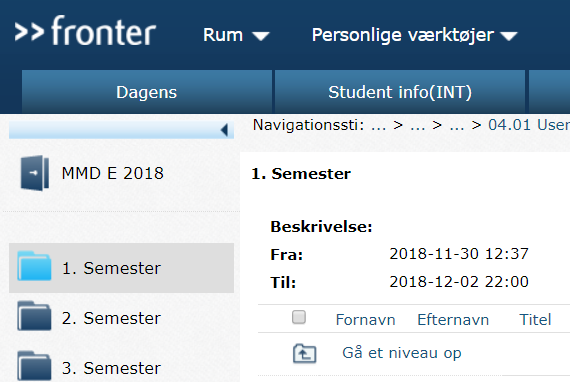

User research

04.01.02
I denne opgave lærte jeg at bruge en usability test på et produkt(Fronter). Jeg udarbejdede et manuskript og test opgaver efter at have fundet frem til hovedområder hvor produktet (i dette tilfælde Fronter) kunne forbedres.